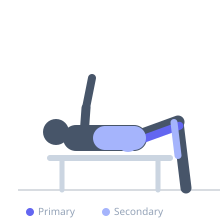
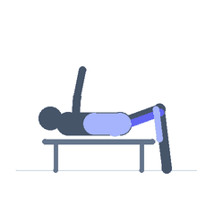

Exercise guide / Glute-Ham Developer GHD Leg Curl
Glute-Ham Developer GHD Leg Curl
The glute-ham developer leg curl is performed on a GHD machine where the feet are secured in the foot plates and the thigh pads support the lower thighs. The lifter performs knee flexion to bring the torso upright from a prone extended position, working the hamstrings both as a knee flexor and hip extensor simultaneously. This makes the GHD curl unique in its ability to train the hamstrings through both their functions in one movement.
Primary muscles
biceps femoris long head
semitendinosus
semimembranosus
Secondary muscles
gluteus maximus
gastrocnemius medial
erector spinae
Stabilizers
transverse abdominis
Equipment
Hyperextension Bench (45°)


Starting position
- Set the GHD machine so the thigh pads rest just above the knees. Secure the feet in the foot plates. Begin with the body extended downward, hands at chest for safety.
Setup
- Adjust the GHD foot plate and thigh pad distance for your height. Begin with a controlled eccentric to test the difficulty before attempting full reps.
Steps
- Step 1: Begin in the extended position (torso roughly parallel to the floor or angled below horizontal).
- Step 2: Drive the toes into the foot plate and curl the hamstrings to flex the knees.
- Step 3: Use the hamstrings to curl the torso upright until the body is fully erect.
- Step 4: Lower slowly back to the starting position by extending the knees under control.
Coaching cues
- Drive the toes into the plate
- Hamstrings pull you up — not your back
- Control the descent
Breathing
- Exhale on the curl up, inhale on the controlled descent.
Range of motion
- Full extension at the start (body near horizontal), full flexion with torso erect at the top.
Tempo
- 2-0-4-0 (explosive curl, controlled 4s eccentric)
Common mistakes
- Using the lower back (hip extension) to compensate for weak hamstrings
- Dropping too fast on the eccentric
- Insufficient foot plate pressure
Safety
- Extremely demanding — master the Nordic hamstring curl before progressing here
- Use hands to assist if needed in early training
Training
- strength: 3–8 reps
- hypertrophy: 6–12 reps
- strength: 3–5 sets
- hypertrophy: 3–4 sets
- Rest: {'strength': 180, 'hypertrophy': 120}